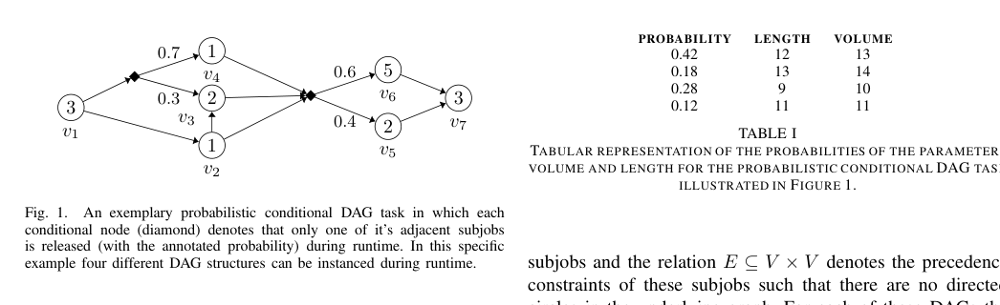
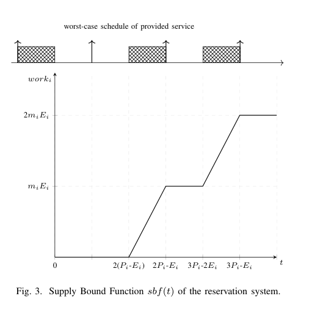
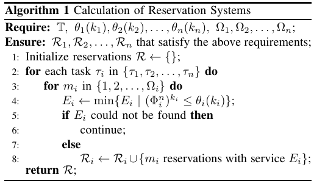

概率条件并行 DAG 任务的响应时间分析与优化中文翻译稿
摘要。本文面向多核实时系统中的概率条件并行 DAG 任务。现代实时应用常包含条件分支，例如自动驾驶和图像处理中的不同传感器输入会触发不同执行路径；任务执行时间也可能随环境和硬件状态变化。作者提出基于 reservation 的调度与分析方法，用服务供给隔离任务间干扰，并为 sporadic constrained-deadline parallel conditional DAG tasks 提供概率化响应时间保证。目标不是要求每个 job 都硬实时完成，而是在允许有限 deadline miss 和有限 tardiness 的前提下，保证 k 次连续 deadline miss 的概率有界。
1 动机
多核处理器能满足复杂实时应用的算力、功耗和散热需求，但也带来共享资源竞争、缓存干扰和内存带宽争用。传统 worst-case response-time analysis 往往非常悲观，导致资源利用率偏低。对于闭环控制等软实时或弱硬实时应用，少量 deadline miss 未必破坏系统稳定性，因此可以使用概率化约束来换取更高资源利用率。
条件 DAG 模型描述了任务内部的并行结构和分支结构：一次 job 执行时只会沿某些分支实例化出一个具体 DAG。若同时考虑分支概率和执行时间不确定性，系统需要回答三个问题：deadline miss 的概率是多少，连续 k 次 miss 的概率是多少，最坏 tardiness 能否被限制在可接受范围内。

2 模型
论文把一个任务表示为 probabilistic conditional DAG。DAG 中的条件节点根据概率选择后继路径，所有可能路径组合构成一组 possible DAGs。每个 possible DAG 都有自己的 volume（总工作量）和 length（关键路径长度）。这些值不再是单一常数，而是由分支概率诱导出的分布。
任务以 sporadic 方式释放，并带有相对 deadline。系统关注 bounded tardiness，即 job 即使错过 deadline，也不能无限期拖延；同时关注 k-consecutive deadline misses，即连续 k 个 job 均 miss 的概率必须低于指定阈值。这比只约束单次 deadline miss 更接近控制系统对稳定性的需求。
3 Reservation-Based Scheduling
作者使用 reservation system 来避免复杂的任务间干扰分析。一个 reservation 可理解为周期性提供一定服务量的虚拟处理器：任务不直接与其它任务争抢所有 CPU，而是在自己的 reservation 中获得可分析的服务供给。这样可以把多任务多核调度问题转化为单任务在给定 service curve 下的响应时间分析。

分析的关键是把 possible DAG 的 volume/length 分布与 reservation 的 supply bound function 结合起来，得到响应时间和 tardiness 的概率上界。系统不要求 late job 立即 abort，而是允许它继续执行，同时保证后续 job 的连续 miss 概率仍满足要求。
4 优化算法
论文提出一个计算 reservation systems 的算法。输入包括任务集合、各任务的概率化结构和相应约束；算法枚举或搜索服务参数，为每个任务找到满足概率化 deadline/tardiness 要求的 reservation。如果某个任务在给定资源下找不到可行服务量，则说明当前约束或资源配置不可满足。

这种方法的价值在于把不确定的条件并行执行变成可组合的供给与需求匹配问题。相比直接分析全局调度下所有互相抢占和异常效应，reservation 提供了更清晰的边界，但代价是可能牺牲部分资源效率。
5 结论与启发
本文的主要贡献是把 probabilistic conditional DAG、bounded tardiness 和 k-consecutive deadline misses 放在一个统一分析框架中，并给出基于 reservation 的调度/优化方法。它适合安全关键系统中“可以容忍少量迟到，但必须量化风险”的场景。
对本仓库方向的意义。如果后续做 conditional agent workflow 或 LLM DAG 调度，这篇论文提供了一个很有用的概率建模方式：分支不是简单 worst-case 展开，而是带概率的 possible DAG 集合。可以借鉴它，把 LLM workflow 的分支概率、输出长度分布和 deadline/成本约束结合起来做风险感知调度。
参考说明
参考文献保留在原 PDF 中。本文覆盖摘要、实时系统动机、概率条件 DAG 模型、reservation 分析、优化算法和研究启发。
论文问答
Q1：这篇论文试图解决什么问题？
它解决概率条件并行 DAG 任务在多核实时系统中的响应时间保证问题。任务可能按不同概率走不同分支，执行时间也不确定，系统希望允许有限 tardiness 和少量 deadline miss，但要限制 k 次连续 miss 的概率。
Q2：有哪些相关研究？
相关研究包括 DAG real-time scheduling、federated scheduling、reservation-based scheduling、weakly-hard real-time constraints、probabilistic response-time analysis 和多核共享资源干扰分析。论文把这些方向组合到概率条件 DAG 上。
Q3：论文如何解决这个问题？
论文使用 reservation system 给每个任务提供可分析的服务供给，隔离任务间干扰。它基于 possible DAG 的 length/volume 分布和 supply bound function 计算响应时间和 tardiness 概率，并搜索满足约束的 reservation 参数。
Q4：论文做了哪些实验？
论文主要是模型和分析方法验证，包含示例 DAG、reservation 计算过程和 schedulability/概率约束分析。它展示如何为任务集合计算满足 bounded tardiness 和 k-consecutive deadline-miss 概率的服务配置。
Q5：有什么可以进一步探索的点？
可以进一步探索更大规模任务集的高效搜索、相关分支而非独立概率、实际控制系统数据验证，以及与异构硬件标签结合。对 LLM workflow 来说，可借鉴其 possible DAG 概率分布来建模动态分支和输出长度风险。
Q6：总结一下论文的主要内容。
这篇论文的主要内容是把条件分支、概率执行行为和实时 deadline miss 约束统一起来。reservation-based 方法让复杂并行 DAG 的概率响应时间分析更可控。